PHOTO COLLECTION · SEPTEMBER 2023–SEPTEMBER 2026
Speaking & community
12 images collected from LinkedIn posts. This is a review sheet, separate from the live website. Click an image to open the original saved file.
KM World 2025
Speaking · Original LinkedIn post ↗
Healthcare AI session with Terry Pollard and Taylor Paschal. Event announced for November 18, 2025.
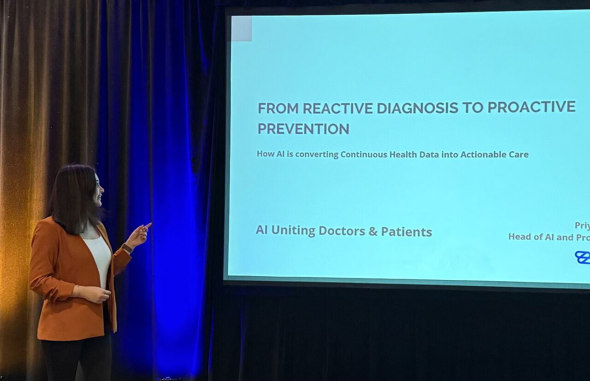
Recommended hero: on stage beside the presentation title.km-world-2025-01.jpg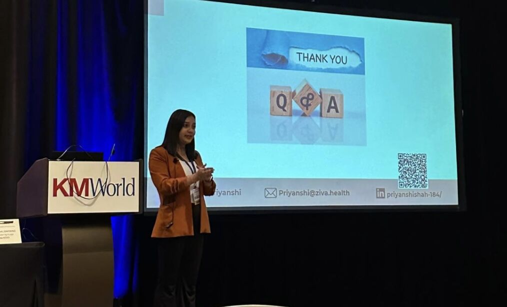
Recommended gallery: speaking during Q&A, with KM World branding.km-world-2025-02.jpg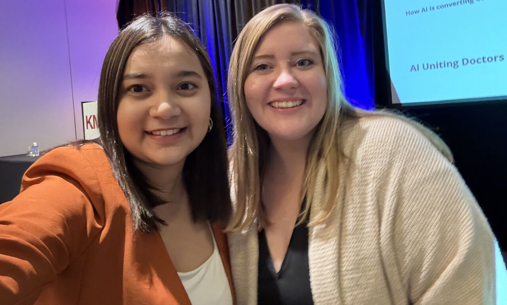
Supporting photo: selfie at the event.km-world-2025-03.jpg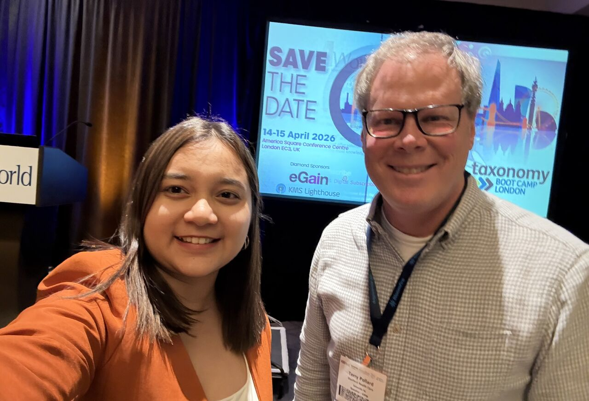
Supporting photo: selfie at the event.km-world-2025-04.jpgGirls in STEM Virginia
Speaking · Original LinkedIn post ↗
STEM careers, AI, university experiences and personal branding.
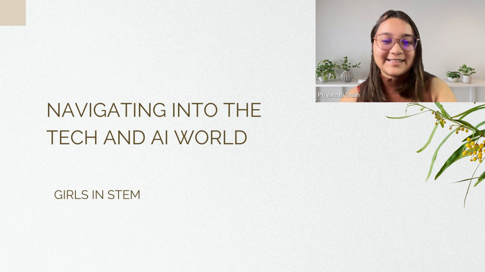
Virtual talk screenshot: Navigating into the Tech and AI World.girls-in-stem-01.jpgUC San Diego — The Student Perspective
Speaking · Original LinkedIn post ↗
Sharing student experiences and advice with HDSI peers. Source includes four participants; review individual photos before choosing a hero.
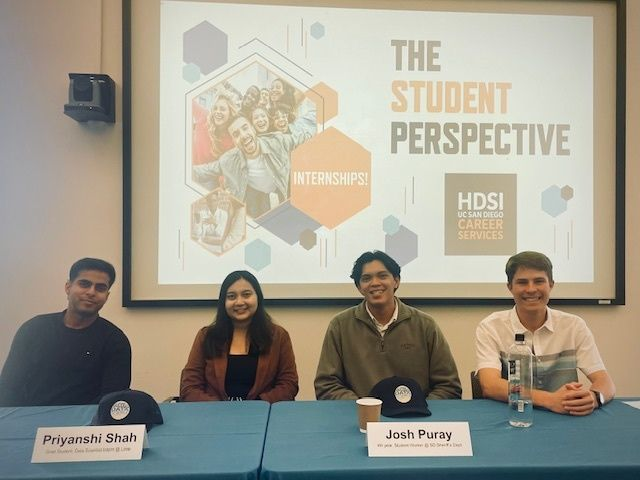
Panel group photograph.ucsd-student-perspective-01.jpg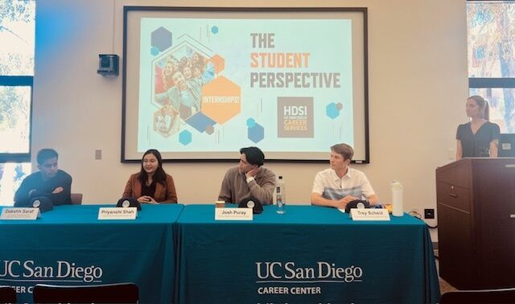
Recommended gallery: panel discussion with UC San Diego branding.ucsd-student-perspective-02.jpg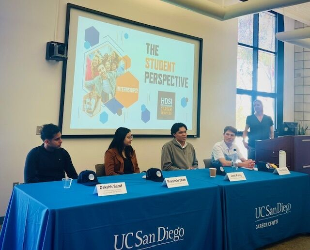
Panel discussion from a side angle.ucsd-student-perspective-03.jpg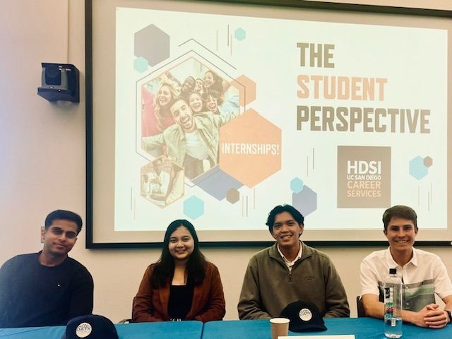
Alternative panel group photograph.ucsd-student-perspective-04.jpgStartR Accelerator Demo Day
Demo day / award · Original LinkedIn post ↗
Team won first position. Keep labeled as a demo day and award, rather than a conference talk.
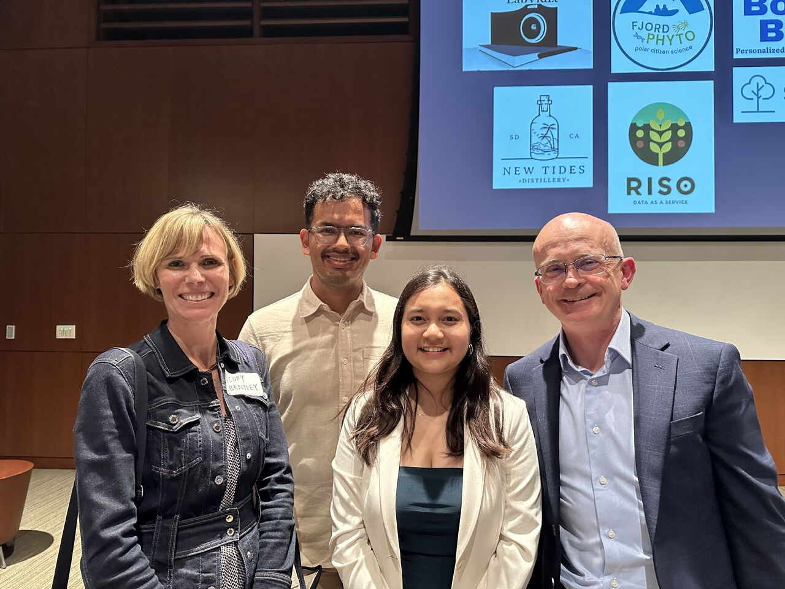
Award/team photograph; not an action shot of a talk.startr-demo-day-01.jpg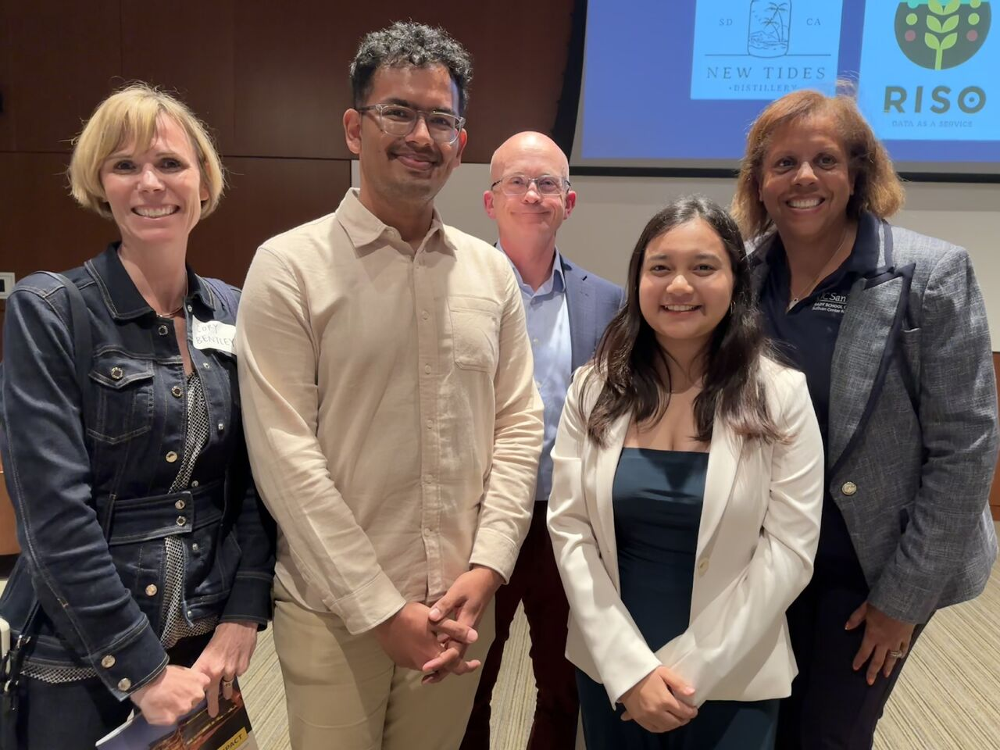
Award/team photograph with mentors; not an action shot of a talk.startr-demo-day-02.jpgHackMIT
Judging · Original LinkedIn post ↗
Judge at HackMIT. Optional community gallery item, not a speaking engagement.
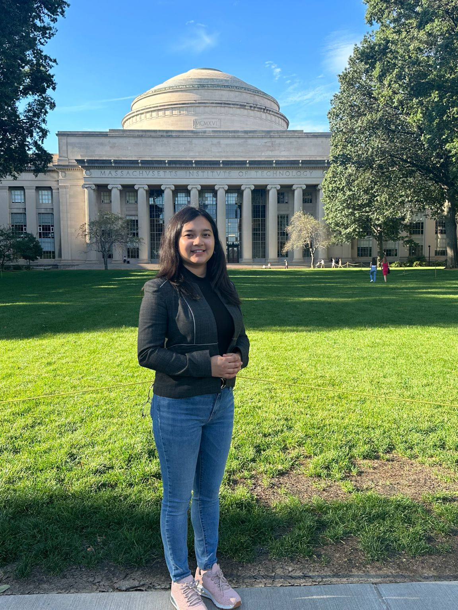
Campus portrait from the judging post; not an action shot of judging or speaking.hackmit-01.jpg